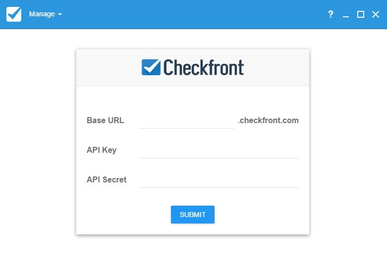
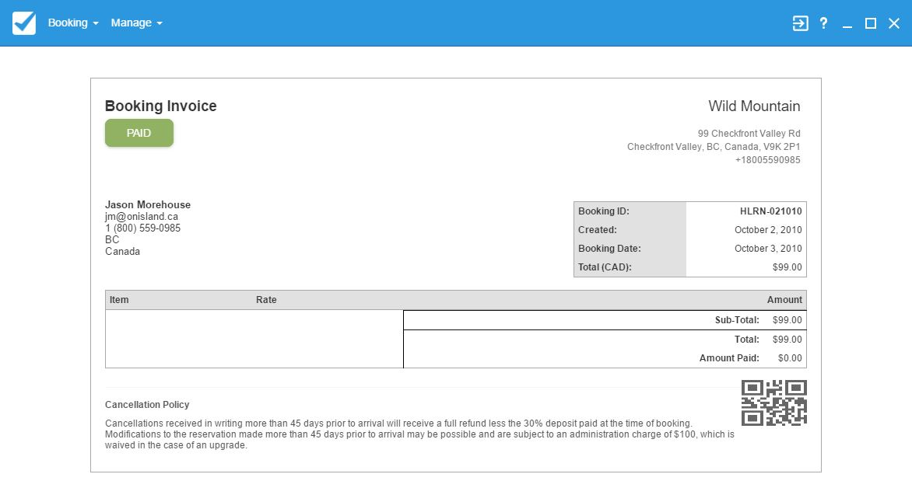

Checktron Desktop Application
Retrieving your authorization from Checkfront.com
Returning to Booking Information
Logging in
Retrieving your Authorization Token and Secret
Before you log on, you must retrieve your authorization token from Checkfront.com.
Log in to your Checkfront page:
<your unique URL>.checkfront.com
In the main navigation bar go to Manage > Developer.
Click on New Application.
Enter the name for your application, for authentication type select “Token”.
Once created you will have an API Key and Secret that can be used to log into Checktron.
Log In
To log in, please make sure you have completed the steps above and have your login information ready.
Input your unique URL in the “Base URL” section.
Input the API token key previously created in the “API Key” section.
Input the API secret previously created in the “API Secret” section.
Click submit once you have filled out the form.
Note: Login information is stored for the auto complete feature to make login easier. To manage stored authentication information, use the main navigation to go to Manage > API Connections.
Log Out
Click on the Manage tab beside the Checkfront logo.
Navigate down to log out.
Click log out.

Manage API Connections
On this screen, you can view stored valid login credentials. To remove stored information click on the garbage can icon.
Making a Booking
Searching for an item
The search bar enables you to filter the bookings shown in the booking index by categories. You may also use the calendar widget to filter by start and end dates.
Note: Some items may not show up if they do not match start and end dates
Entering Details
Once you see the item of interest you may enter the booking details. Click on the item to bring up a dialog. Enter the correct information and submit.
Note: Some items are parent items. All suites may be a parent item with individual rooms as child items. When booking a parent item a child item will need to be selected.
Filling out the Booking Form
Submitting the booking details for a selected item will bring up a form. Customer information is entered here. When required fields are filled in submitting the form will create the new booking and bring up the booking page.
Booking Page
Once your booking has been successful, the application will display a booking invoice. An example of this can be seen on page 10, figure 7. The invoice page for any booking can be accessed through the Booking Index page, described on the next page.
Returning to Booking Information
Booking Index
The booking index displays all bookings in the system. It will show items and their associated details. Clicking on any of the bookings below will navigate you to its individual invoice page.
Booking Page
Each booking has its own booking page. The page displays a sample of the invoice for the booking.

Changing Status of Bookings
The status of a booking can be changed on its booking page. Clicking on the current status will bring up a menu where a new status can be selected.